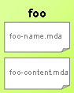

A template is a parameterized "document" that will be turned into text file thanks to a template engine.
In anycode, it is actually a set of 2 files that describe both the path (name) of the file to be generated and its content. They must be created altogether in the same directory and must comply with the following naming convention:
| Prefix | Suffix | Extension | Description | Example |
|---|---|---|---|---|
| Any valid filename | -name | .mda or .mdm | Template that is responsible for generating source code file's path | foo-name.mda |
| Any valid filename | -content | .mda or .mdm | Template that is responsible for generating source code content | foo-content.mda |
2 files foo -name.mda and foo -content.mda compose one template identified as foo template.

Before 1.2.0, Anycode used to rely on freemarker language as template engine. Although that language is powerful and reusable thanks to directive mechanism, it was not so easy to learn for end users nor to test automatically (unit tests). In order to extend the tool, a decision was made to switch from Freemarker to Groovy, as it is closer to the well known JSP syntax, and Directives can be unit tested like any Groovy Class.
So starting from Anycode 1.2.0, we'll rely only on Groovy templating engine. The latter is used as is . As a consequence, learning its syntax is a prerequisite to using the plugin.
For more information on how to write templates with Groovy, please see Groovy Templates manual
The example below shows a template that generates a java class. It is made up of 2 files :
MyTemplate-name.mda${targetDir}/${c.getFullyQualifiedName("/")}.javapackage ${c.owner.getFullyQualifiedName(".")};
${java.classifierSignature(c)} {
<% def atts = c.attributes %>
<% atts.each() {%>
${java.attribute(it)}
<% } %>
<% atts.each() { %>
${java.getter(it)}
${java.setter(it)}
<% } %>
} Several variables are used here : "c", "java"... These will be explained in Template context section.
Needs for code generation can be different from one developer to another. Some will want to generate their classes to a specific language, some other will prefer to generate a document for the whole model. They will therefore need to manipulate the model itself or only one of its classifiers.
Depending on file's extension name, a template can process either a classifier or the whole UML model :
To generate files, template engine always passes a context to templates. It's a set of variables that you can call from the template:
| Parameter name | Available for scope | Description | Type |
|---|---|---|---|
| m | Model scope (*.mdm) only | Anycode model instance. | in.labulle.anycode.uml.IModel (from Anycode UML API ) |
| c | Classifier scope (*.mda) only | Anycode class instance. This variable will help you generate most of the content of your source code. | in.labulle.anycode.uml.IClassifier (from Anycode UML API ) |
| targetDir | any scope | Target directory that you chose from anycode configuration panel. This will be useful to build the name of the generated file (its path). | java.lang.String |
| templateDir | any scope | Template directory that you chose from anycode configuration panel. This is where you saved your template(s). | java.lang.String |
NOTE : IClassifier and IModel is an interface provided by Anycode UML API whose javadoc is available online here . It represents a class designed in Astah and wraps it so that it is even easier to use in templates. From the template, you can therefore access a UML Class information, its name, package, attributes, operations, relations, stereotypes... To sum up, you can have access to (almost?) anything you designed in your diagram. And the good news is that Anycode API is quite easy to use. For practical examples, please see Language reference section of this guide and also Tutorials section .
Templates use UML model directly, through variables. This makes code generation straightforward.
However, their size will grow a lot if you don't have a way to reuse some functions. Fortunately you can write custom "directives" in separate files and call their functions directly from your templates. This section will tell you how to do that.
A Directive a just a Groovy class, saved in the template directory (directory templates are stored), and whose filename follows a specific naming convention : [myCode]-directive.mda. This class is detected and processed by anycode, i.e. : an instance of the class is available in your template with "myCode" variable name.
Let's take an example : suppose you need to generate a PHP attribute of a class as well as its getters and setters. You can then write all the code in the directive as you can see below.
myPhp-directive.mda
import in.labulle.anycode.uml.*;
class PhpDirective {
def attribute(IAttribute a) {
return """private var \$${a.name};"""
}
def getter(IAttribute a) {
return """public function get${capitalize(a.name)}() {
return \$this->${a.name};
}"""
}
def setter(IAttribute a) {
return """pblic function set${capitalize(a.name)}(\$aValue) {
\$this->${a.name} = \$aValue;
}"""
}
def capitalize(String s) {
return s[0].toUpperCase() + s.substring(1)
}
}
The above class is a Directive. This is a regular Groovy Class that imports Anycode API and that helps generating variable, getter and setter from a UML Attribute. There is no specific constraint regarding the class' name or its methods. The only important thing to remember is to import the required dependencies (like any groovy class) and make sure that they are in Astah's classpath.
Now, let's see how to use this directive in our template, thus reducing its code and improving its readability :
yetanothertemplate-name.mda
${targetDir}/${c.name}.php
<?php
class ${c.name} {
<% c.attributes.each() { %>
${myPhp.attribute(it)}
${myPhp.getter(it)}
${myPhp.setter(it)}
<% } %>
}
?>And the result below with a simple Person class with 3 attributes :
Person.php
<?php
class Person {
private var $firstname;
public function getFirstname() {
return $this->firstname;
}
public function setFirstname($aFirstname) {
$this->firstname = $aFirstname;
}
private var $lastname;
public function getLastname() {
return $this->lastname;
}
public function setLastname($aLastname) {
$this->lastname = $aLastname;
}
private var $birthdate;
public function getBirthdate() {
return $this->birthdate;
}
public function setBirthdate($aBirthdate) {
$this->birthdate = $aBirthdate;
}
}
?>anycode provides a few directives out of the box for Java, JPA/Hibernate/Spring-Data, Objective-C (limited support). Please read Directives APIfor further details.